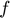
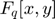
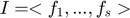
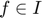

Contents
Algoritmo de pertenencia a un ideal
Dado  en  y un ideal  determinamos si 
path(path, 'Algorithms'); path(path, 'Classes'); clear
p = 3;
n = 1;
f = {[1 0 1],[1 1 0],[0 2 0],[1 1 2]}; % f(x) = (2y^1 + 2x^1 + 1x^2 + 2x^1y^2)
g = {[1 0 0],[0 1 0],[1 1 1]}; % g(x) = (2 + 1x^1 + 2x^1y^1)
h = {[1 0 0],[0 1 0]}; % h(x) = (2 + 1x^1)
I = {g,h};
Fqx = FiniteFieldPoly(p,n);
MPFqx = FiniteFieldMultiPoly(Fqx,2);
% lex_order = @(x,y,z) MPFqx.lex_order(x,y,z);
lex_order = @(x,y,z) MPFqx.lex_gr_order(x,y,z);
% lex_order = @(x,y,z) MPFqx.lex_gr_r_order(x,y,z);
in = ideal_member(f,I,MPFqx,lex_order);
fprintf("f(x,y) = %s\n", MPFqx.gfshow(MPFqx,f));
if ~in
fprintf("no ");
end
fprintf("pertenece al ideal\n I = <");
for i = 1:length(I)
fprintf("%s", MPFqx.gfshow(MPFqx,I{i}));
if i~=length(I)
fprintf(", ");
end
end
fprintf(">\n");
f(x,y) = 2y^1 + 2x^1 + 1x^2 + 2x^1y^2 pertenece al ideal I = <2 + 1x^1 + 2x^1y^1, 2 + 1x^1>
p = 3;
n = 2;
f = {[1 0 1],[0 2 0],[1 1 2]}; % f(x) = ((0 + 1a)y^1 + (1 + 0a)x^2 + (0 + 1a)x^1y^2)
g = {[1 0 0],[1 1 1]}; % g(x) = ((0 + 1a) + (0 + 1a)x^1y^1)
h = {[1 0 0],[0 1 0]}; % h(x) = ((0 + 1a) + (1 + 0a)x^1)
I = {g,h};
Fqx = FiniteFieldPoly(p,n);
MPFqx = FiniteFieldMultiPoly(Fqx,2);
% lex_order = @(x,y,z) MPFqx.lex_order(x,y,z);
% lex_order = @(x,y,z) MPFqx.lex_gr_order(x,y,z);
lex_order = @(x,y,z) MPFqx.lex_gr_r_order(x,y,z);
in = ideal_member(f,I,MPFqx,lex_order);
fprintf("f(x,y) = %s\n", MPFqx.gfshow(MPFqx,f));
if ~in
fprintf("no ");
end
fprintf("pertenece al ideal\n I = <");
for i = 1:length(I)
fprintf("%s", MPFqx.gfshow(MPFqx,I{i}));
if i~=length(I)
fprintf(", ");
end
end
fprintf(">\n");
f(x,y) = (0 + 1a)y^1 + (1 + 0a)x^2 + (0 + 1a)x^1y^2 no pertenece al ideal I = <(0 + 1a) + (0 + 1a)x^1y^1, (0 + 1a) + (1 + 0a)x^1>